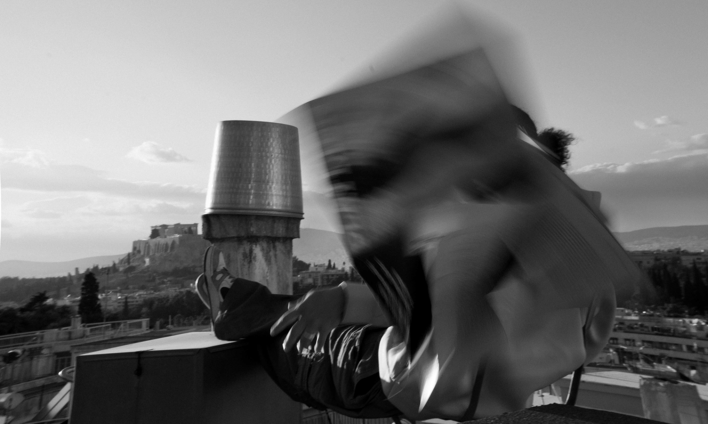

Athens serie #0811
ΠΕΡΙΣΟΤΕΡΑThe Pagrati Collection

Je m'appelle Alexis Mitakos, je suis un photographe et graphiste de 20 ans basé à Lyon. Passionné par la capture d'instants intemporels.
Je suis fier de vous présenter The Parait Collection, une série de photographies réalisées dans le quartier de Pangrati, à Athènes.
À travers ces clichés, j'ai souhaité retranscrire l'atmosphère unique de ce lieu.